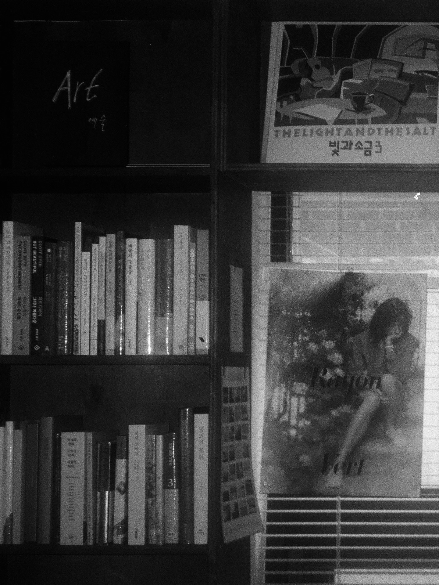
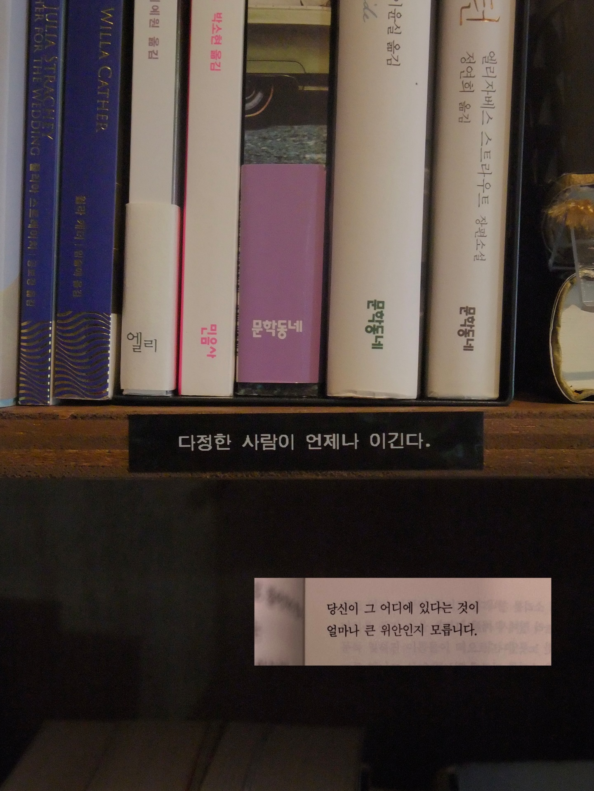

책방밀물

“반드시 밀물 때는 온다. 바로 그 날, 나는 바다로 나갈 것이다” 나에겐 앨리스의 토끼굴같은 밀물이다. 문을 열고 입장하는 순간 무한한 가능성의 공간으로 떨어지는 기분이 든달까. 이곳에서는 시간도 다르게 흐르는 거 같다. 생각만으로도 위안이 되는 나의 귀여운 토끼굴.


“반드시 밀물 때는 온다. 바로 그 날, 나는 바다로 나갈 것이다” 나에겐 앨리스의 토끼굴같은 밀물이다. 문을 열고 입장하는 순간 무한한 가능성의 공간으로 떨어지는 기분이 든달까. 이곳에서는 시간도 다르게 흐르는 거 같다. 생각만으로도 위안이 되는 나의 귀여운 토끼굴.

